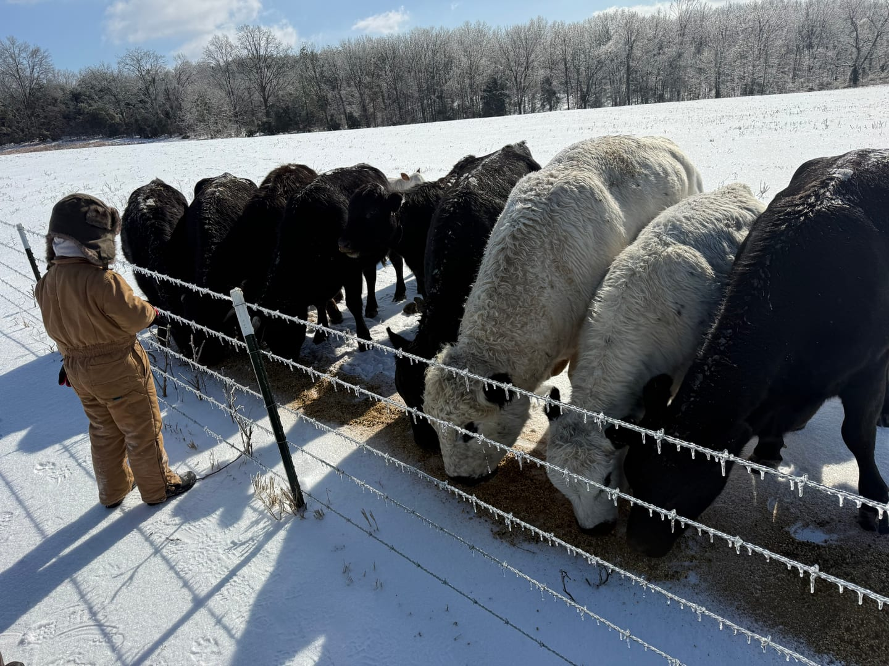
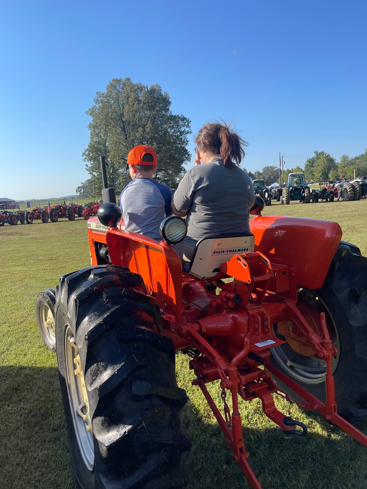

Our Story
We know every animal
by name.
Long Branch Farms started with a simple conviction: people in our community deserve to know exactly what they're eating and how it was raised. We're two working parents with a six-year-old and a deep belief that doing things the right way is always worth the extra effort.
Our pigs have access to pasture and woods. We mix their feed by hand every day and supplement with milk from our A2/A2 dairy cow. Our beef is grass-finished for a leaner, healthier cut. No shortcuts. No chemicals. Just the same standard we hold for our own table.
Pasture Raised
Pigs with access to woods and open pasture, the way nature intended.
Hand-Mixed Feed
Daily custom feed blended on the farm, supplemented with fresh dairy milk.
Grass Finished
Beef finished on grass for a leaner, more nutritious final product.
No Additives
Zero antibiotics, zero vaccines, zero hormones, at any stage.